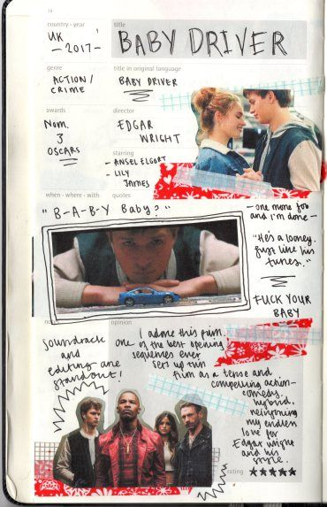

BABY DRIVER is a 2017 action film written and directed by Edgar Wright. It stars Ansel Elgort as a young, musically driven getaway driver seeking freedom from a life of crime with his lover Debora (Lily James). Kevin Spacey, Jon Hamm, Eiza González, Jamie Foxx and Jon Bernthal (among others) appear in supporting roles. Eric Fellner and his Working Title Films partner Tim Bevan produced Baby Driver in association with Big Talk Productions' Nira Park. Sony and TriStar Pictures handled commercial distribution of the film. Baby Driver was financed through a partnership between TriStar and Media Rights Capital.
 The film is a longtime passion project Wright had developed for over two decades. He devised the idea well in his youth, and his early directing experience furthermore shaped his ambitions for Baby Driver. Originally based in Los Angeles, Wright later revised the film's setting to Atlanta, integrating the city's ethos into an important storytelling device. Principal photography took place in Atlanta over four months, from February to May 2016. Production involved the planning of meticulously coordinated stunts, choreography, and in-camera shooting. Critics have examined Baby Driver's subject matter in thematic studies of the film, with emphasis on its use of color symbolism and focus on Baby's evolving morality.
“Baby Driver” is so good that you want it to be better and go deeper, for it to put down its guns (or at least hold them differently) and transcend its clichés and cine-quotes so it can rocket out of the genre safe box into the cosmic beyond where craft and technique transform into art. That’s admittedly somewhat of a greedy complaint, particularly given how much Mr. Wright does right and that he clearly wants you levitating out of your seat. It’s difficult to carp about a director who wants to please the audience this much (instead of, say, the franchise suits). At the same time, you have to wonder where Mr. Wright might go if he cut loose from his influences and let a little feeling muss up his form.